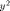
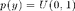
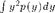
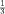

Contents
approx_expected_value.m
From A First Course in Machine Learning, Chapter 2. Simon Rogers, 31/10/11 [simon.rogers@glasgow.ac.uk] Approximating expected values via sampling
clear all;close all;
We are trying to compute the expected value of

Where 
Which is given by: 
The analytic result is: 
Generate samples
ys = rand(10000,1); % compute the expectation ey2 = mean(ys.^2); fprintf('\nSample-based approximation: %g',ey2);
Sample-based approximation: 0.333164
Look at the evolution of the approximation
posns = [1:10:length(ys)]; ey2_evol = zeros(size(posns)); for i = 1:length(posns) ey2_evol(i) = mean(ys(1:posns(i)).^2); end figure(1);hold off plot(posns,ey2_evol); hold on plot([posns(1) posns(end)],[1/3 1/3],'r--'); xlabel('Samples'); ylabel('Approximation');